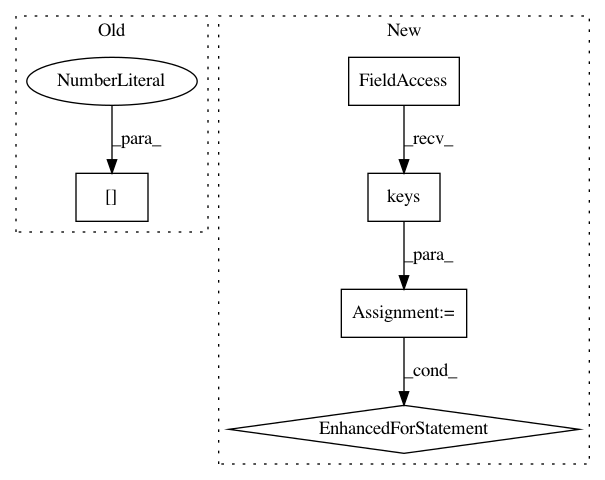

128dbbe25c3232f1423337b2c37fb743d26df3c8,pgmpy/models/MarkovChain.py,MarkovChain,sample,#MarkovChain#,214
Before Change
for i in range(size - 1):
for j, (var, st) in enumerate(self.state):
next_st = sample_discrete(list(self.transition_models[var][st].keys()),
list(self.transition_models[var][st].values()))[0]
self.state[j] = State(var, next_st)
sampled.loc[i + 1] = [st for var, st in self.state]
return sampled
After Change
var_states = defaultdict(dict)
var_values = defaultdict(dict)
samples = defaultdict(dict)
for var in self.transition_models.keys():
for st in self.transition_models[var]:
var_states[var][st] = list(self.transition_models[var][st].keys())
var_values[var][st] = list(self.transition_models[var][st].values())
samples[var][st] = sample_discrete(var_states[var][st], var_values[var][st])[0]
for i in range(size - 1):
for j, (var, st) in enumerate(self.state):
next_st = samples[var][st]
self.state[j] = State(var, next_st)
In pattern: SUPERPATTERN
Frequency: 3
Non-data size: 5
Instances
Project Name: pgmpy/pgmpy
Commit Name: 128dbbe25c3232f1423337b2c37fb743d26df3c8
Time: 2015-11-19
Author: ankurankan@gmail.com
File Name: pgmpy/models/MarkovChain.py
Class Name: MarkovChain
Method Name: sample
Project Name: naoto0804/pytorch-AdaIN
Commit Name: 4a5eef64d2a0ab5e1737ffbb345d9e72d2f1adc9
Time: 2018-05-16
Author: inoue@hal.t.u-tokyo.ac.jp
File Name: train.py
Class Name:
Method Name:
Project Name: danforthcenter/plantcv
Commit Name: 21e6d8d6a5452ca96cecb00f8a9083de14a947c4
Time: 2019-10-23
Author: haleyschuhl@gmail.com
File Name: plantcv/plantcv/hyperspectral/analyze_spectral.py
Class Name:
Method Name: analyze_spectral